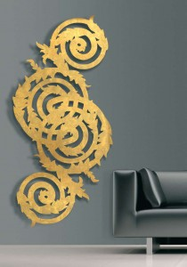

РАДИАТОРЫ ОТОПЛЕНИЯ: ФУНКЦИОНАЛЬНОСТЬ И ЭСТЕТИКА
Когда заходит разговор о радиаторах отопления, сразу вспоминаются чугунные радиаторы, которые «украшали» наши жилища долгие годы. Тем не менее, требования к оборудованию, которое неизменно участвует в нашей жизни, постоянно растут, а значит, меняется как их внешний вид, так и функциональные характеристики. Отличный пример – современные радиаторы отопления, которые могут стать настоящим украшением любого дома. Те, кто уже видел такие отопительные приборы, конечно же, мгновенно поняли, что они не идут ни в какое сравнение с советскими чугунными радиаторы, так как превосходят их по всем характеристикам.
Современное решение для отопления дома
В современной системе отопления, как правило, можно выделить три основные элемента: в генератор тепла (как правило, это котлы, тепловые насосы или солнечные коллектора), приборы отопления (радиаторы, теплые полы и т.п.) и трубопроводы. И выбор каждого из этих элементов, так или иначе, влияет на эффективность системы отопления в целом.
Радиаторы отопления сегодня устанавливают многие владельцы частных домов. Во-первых, для кого-то установка «теплых полов» – достаточно дорогое удовольствие. Во-вторых, «теплый пол» отлично справится с предоставленными задачами до минус 15 С, но когда температура опуститься ниже его мощности будет не хватать и понадобиться дополнительный источник питания. И, наконец, влияние системы «теплый пол» на организм человека до сих не до конца изучено, некоторые проектировщики не рекомендуют использовать систему в спальнях, детских и других места активного времяпроведения семьи. Почему? Говорят, что система «поднимает» не оседающуюпыль, к тому же прогревает помещение не полностью равномерно: то есть чем ближе к полу, тем температура будет выше, и пропорционально наоборот. Опять же, многие проектировщики утверждают, что самое грамотное сочетание – это совмещение радиаторов отопления с «теплыми полами».
Выбор радиатора – нюансы и тонкости
Выбор радиатора отопления – с одной стороны, не самая сложная задача, с другой – разнообразие производителей и вариантов приборов сегодня очень велика, а значит необходимо понимать цели и ожидания от нашей покупки.
Сегодня радиаторы отопления можно найти на любой вкус и цвет, и тут все зависит от пожеланий домовладельца. Главный практический показатель радиатора – энергоэффективность, иначе говоря, то, насколько быстро он нагревается и отдает тепло. Однако этот показатель зависит во многом не только от самого радиатора, но и от характеристик трубопровода и способа циркуляции теплоносителя в трубах. И вот тут домовладельцу стоит крепко задуматься.
Так, выбирая трубы, надо в первую очередь учитывать их диаметр. В трубах меньшего диаметра циркулирует меньшее количество теплоносителя, соответственно, потери тепла через поверхность труб тоже уменьшаются. Наряду с этим теплоноситель в трубах малого диаметра нагревается и циркулирует быстрее. Вывод: чем меньше диаметр труб, тем эффективнее работа всей системы отопления и ниже затраты на ее содержание. Материал труб не столь важен с позиции энергоэффективности, однако и здесь нужно учитывать ряд моментов. Например, стальные трубы ржавеют и дороги в монтаже. Медные, не ржавеют, но стоят намного дороже.
На что обращать внимание?
Есть ряд технических показателей, которые важны для долгосрочной и эффективной работы отопительного оборудования, ведь сегодня не все зарубежные (как и отечественные) приборы адаптированы к различных характеристикам теплоносителя и ситемы отопления.
Важные технические показатели при выборе радиаторов:
- Рабочие характеристики, которые включают рабочее давление (давление воды, которое может выдержать данный радиатор) и теплоотдачу (сколько тепла отдает секция радиатора). Есть тонкий нюанс: иногда производители, прибегая к маркетинговому ходу, сознательно завышают теплоотдачу прибора. Например, в документации на продукцию вы можете прочитать, что теплоотдача прибора – 200 Вт, при DT – 70 С. Но никто не расшифровывает, что это обозначает. На самом деле, это разность между средней температурой воздуха в помещении (принимается 20 С) и средней температурой в системе отопления. То есть рабочая теплоотдача радиатора указана при подаче 100, а обратке – 80. Но корректно считать теплоотдач при DT – 50 С. Тогда давление получится 120Вт, что соответствует 1,2 м³ площади помещения.
- Чтобы правильно подобрать радиаторы, необходимо сообщить продавцу определенные данные и характеристики своего жилища. Например, если помещение угловое или какая-то стена промерзает, то это необходимо учесть при выборе прибора отопления, если вы не хотите, чтобы зимой у вас было прохладно в комнате. Лучше всего принести с собой проект дома, где будут указаны толщина стен, количество стеклопакетов, вид кровельного покрытия и другие характеристики наружных конструкций, на основании которых производители помогут вам подобрать необходимо количество секций, а также тип радиатора.
Дизайн-радиаторы – невероятные эстетические возможности
Последнее время модно дополнять дизайн дома современными дизай-радиаторами. Дизайнерские радиаторы в большинстве случаев воспринимаются, как отопительные приборы, которые обладают нетрадиционным внешним видом. Некоторые дизайнеры, которые закрывают обыкновенный отопительный аппарат декоративной решеткой, по ошибке считают, что создали дизайнерский радиатор. Следует знать, что это далеко не так. Дизайн-батареей называется устройство, которое обладает необычной формой и украшает интерьер помещения.
Дизайн-радиаторы могут обрамлять зеркало, выступать в роли перегородки и даже «прикинуться» скамейкой. В отличие от классических радиаторов, дизайн-радиаторы отопления встраиваются в интерьер еще на этапе его проектировки, когда дизайн-макет помещения только создается. Боле подробно разнообразные идеи, которые могут быть воплощены в простом приборе отопления вы можете посмотреть на фото.
Надежда Родцевич, обозреватель


{kind=link}
{kind=link}
{kind=link}
{kind=link}